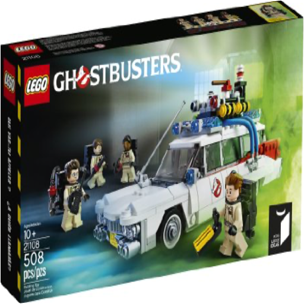
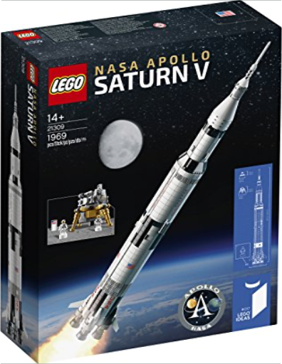

lego friends - 41333 - le véhicule de mission d'olivialego  Take Olivia's ambulance to Heartlake City Park - a cat needs your help! Olivia and her robot Zobo have everything they need to ensure safety in Heartlake City. Put Zobo in the helm on the roof to monitor the situation. Meanwhile, Olivia sets up the ladder to rescue the little cat from the tree. If you've saved the cat, drive to Olivia's friends: everyone has room!  Drive with Mia and Stephanie to the countryside for camping! Open the roof, set up the picnic bench, and cook in the kitchen to prepare the food. Plan an adventurous trip with the inflatable dinghy or go horse riding with the good-natured horse! Open the upper sleeping area and put the girls to sleep. Tomorrow they have time to set up the tent and dream under the stars.  lego ideas - 21108 - ghostbusterslego Capture les fantômes grâce au coffret Ghostbusters de Lego Ideas. Monte à bord de la célèbre voiture Ecto-1 avec son toit amovible, un ordinateur et des sièges pour 3 figurines. Ce jouet est inspiré des films Ghostbusters SOS fantômes. La boite contient les briques et les éléments pour construire le véhicule ainsi que 4 figurines avec des packs à protons: Peter Venkman, Ray Stantz, Egon Spengler et Winston Zeddemore. A partir de 10 ans.  Construisez, exposez et jouez avec Wall-E, le dernier robot sur Terre.  lego ideas - 21309 - nasa apollo saturn Vlego Amusez-vous avec cet imposant modèle en briques LEGO® représentant le lanceur Saturn V de la mission Apollo de la NASA. Fidèle reproduction de la fusée jusque dans les moindres détails, ce modèle présente 3 étages amovibles, dont la section S-IVB avec le module lunaire et l'orbiteur. Cet ensemble inclut également 3 supports permettant d'exposer le modèle à l'horizontale, ainsi que 3 minifigurines d'astronautes avec lesquelles vous pourrez vivre des aventures incroyables sur la Lune. Vous trouverez aussi un livret sur les missions habitées Apollo et sur les designers passionnés à l'origine de cet ensemble LEGO Ideas.. . Comprend un impressionnant modèle (échelle approximative de 1/110) du lanceur Saturn V de la mission Apollo de la NASA avec des détails réalistes : les étages S-IC, S-II et S-IVB, respectivement le premier, le deuxième et le troisième, sont tous amovibles, le vaisseau Apollo et la fusée de secours se situent au sommet de la navette spatiale, les 3 supports permettent d'exposer le modèle à l'horizontale.. Le vaisseau spatial Apollo comprend le module lunaire et l'orbiteur.. Inclut également 3 minifigurines d'astronautes.. Peut être exposé ou être utilisé pour des jeux de rôle lors de missions lunaires habitées.. Inclut un livret sur les missions lunaires habitées Apollo et sur les designers passionnés qui ont créé cet ensemble.. Cet ensemble comprend plus de 1 900 pièces.. Mesure plus de 100 cm de haut et 17 cm de diamètre.. 14 ans et +. 1969 pièces lego juniors- 10726 - la calèche de stéphanielego Partez avec Stéphanie dans sa calèche, puis mettez la selle sur son cheval pour une course après qu'elle se soit reposée dans l'écurie. |  Entrez dans la maison hantée à vos risques et périls ! La maison hantée abrite les fantômes et les monstres les plus effrayants. Tremblez de peur en ouvrant la porte, sentez vos genoux se dérober en franchissant le porche et regardez avec horreur la cheminée, la cuisine, le bureau, l'escalier repliable, la chambre, la salle des potions, la salle de musique et la collection d'autres objets effrayants. Oserez-vous entrer dans la maison hantée ? •Ajoutez la première maison hantée LEGO® officielle à votre collection LEGO® Monster Fighters ! •Inclut 6 figurines : 2 fantômes phosphorescents, le Vampire, la fiancée du vampire, le chef Zombie et un maître d'hôtel. •Comporte un design étrange et mystérieux avec des fenêtres barricadées et un portail qui s'ouvre. •La maison hantée s'ouvre sur un intérieur détaillé à 3 étages. •Le premier étage comprend une cheminée qui s'ouvre en grand et dont le manteau est orné d'un bateau dans une bouteille. •Cuisinez un horrible repas dans la cuisine avec le chef Zombie, le vieux poêle, les bocaux et la table. •Écrivez des lettres depuis le bureau hanté du Vampire. •Actionnez le levier caché dans la cheminée pour libérer l'escalier repliable et accéder à l'étage supérieur. •L'étage supérieur comprend un gramophone, des disques et des éléments LEGO® en forme de journal. •Personnalisez la maison hantée avec les nouveaux autocollants représentant des tapisseries, des toiles d'araignée et des rideaux. •Mesure 39 cm de haut, 24 cm de large et 19 cm de profondeur. Nb de pièces : 2064. Age : 14 ans +. |

Julien
Collection Total:
1 912 Items
1 912 Items
Last Updated:
Dec 19, 2021
Dec 19, 2021

 Made with Delicious Library
Made with Delicious Library